Code show/hide
pbc3 <- read.csv("data/pbc3.csv")
pbc3$fail <- as.numeric(with(pbc3, status > 0))
pbc3$log2bili <- with(pbc3, log2(bili))pbc3 <- read.csv("data/pbc3.csv")
pbc3$fail <- as.numeric(with(pbc3, status > 0))
pbc3$log2bili <- with(pbc3, log2(bili))proc import out=pbc3
datafile="data/pbc3.csv"
dbms=csv replace;
run;
data pbc3;
set pbc3;
log2bili=log2(bili);
run;# General plotting style
library(ggplot2)
theme_general <- theme_bw() +
theme(legend.position = "bottom",
text = element_text(size = 20),
axis.text.x = element_text(size = 20),
axis.text.y = element_text(size = 20))
# Calculate pseudo-observations of the survival function for subjects
# The subjects with id=415 and 458 are selected
# The subjects with id=305 and 325 are selected
library(pseudo)
pseudo_allt <- pseudosurv(pbc3$days, pbc3$fail)
# Re-arrange the data into a long data set
b <- NULL
for(it in 1:length(pseudo_allt$time)){
b <- rbind(b,cbind(pbc3,
pseudo = pseudo_allt$pseudo[,it],
tpseudo = pseudo_allt$time[it],
id = 1:nrow(pbc3)))
}
b <- b[order(b$id),]
pseudo_alltid <- b
# Subset the two subjects
subdat <- subset(pseudo_alltid, id %in% c("305", "325"))
# Collect data for plot
pseudodata <- data.frame(tpseudo = subdat$tpseudo / 365.25,
pseudo = subdat$pseudo,
id = as.factor(subdat$id))
fig6.1 <- ggplot(aes(x = tpseudo, y = pseudo, linetype = id),
data = pseudodata) +
geom_hline(yintercept = c(0, 1), color = "darkgrey", size = 1) +
geom_step(linewidth = 1) +
scale_linetype_manual("Patient number", values = c("dashed", "dotted")) +
xlab("Time since randomization (years)") +
ylab("Pseudo-values") +
scale_x_continuous(expand = expansion(mult = c(0.02, 0.05))) +
scale_y_continuous(expand = expansion(mult = c(0.05, 0.05))) +
theme_general +
theme(legend.position = "none")
fig6.1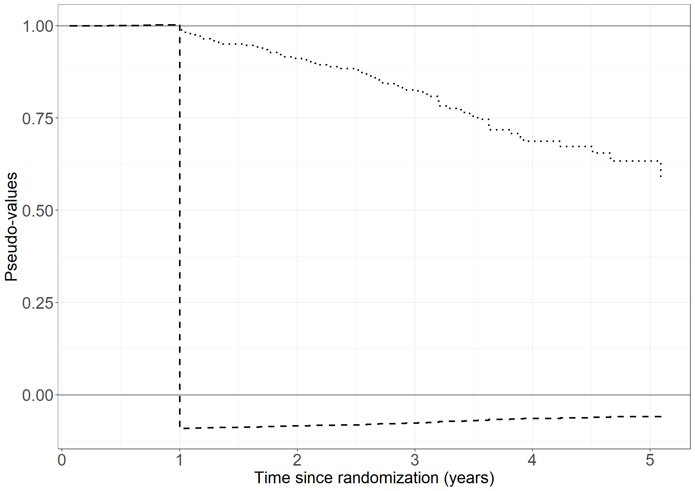
theme_general_1 <- theme_bw() +
theme(legend.position = "none",
text = element_text(size = 26),
axis.text.x = element_text(size = 26),
axis.text.y = element_text(size = 26))
# Select the pseudo-observations at times
times <- c(366, 743, 1105)
# At 1 year
pseudo_t1 <- subset(pseudo_alltid, tpseudo == times[1])
# Collect data for plot
pseudodata <- data.frame(tpseudo = pseudo_t1$tpseudo / 365.25,
days = pseudo_t1$days,
pseudo = pseudo_t1$pseudo,
failtype = as.factor(pseudo_t1$fail))
fig6.2 <- ggplot(aes(x = days / 365.25, y = pseudo, shape = failtype),
data = pseudodata) +
geom_point(size = 6) +
scale_shape_manual("Fail", values = c(4, 1)) +
xlab(expression("X"[i]*" (years)")) +
ylab("Pseudo-values") +
scale_x_continuous(expand = expansion(mult = c(0.05, 0.05)),
breaks = seq(0, 6, 1)) +
scale_y_continuous(expand = expansion(mult = c(0.05, 0.05)),
limits = c(-0.9, 1.1)) +
theme_general_1
fig6.2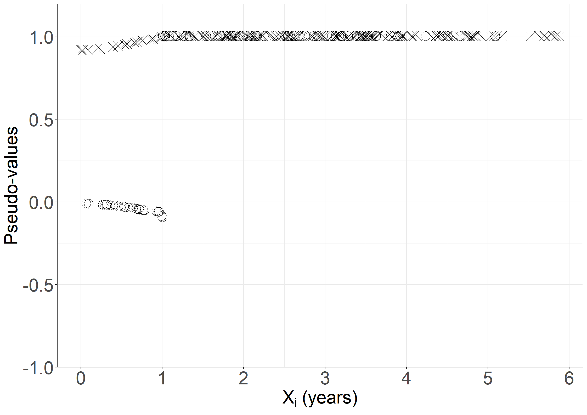
# At 2 years
pseudo_t2 <- subset(pseudo_alltid, tpseudo == times[2])
# Collect data for plot
pseudodata <- data.frame(tpseudo = pseudo_t2$tpseudo / 365.25,
days = pseudo_t2$days,
pseudo = pseudo_t2$pseudo,
failtype = as.factor(pseudo_t2$fail))
fig6.2b <- ggplot(aes(x = days / 365.25, y = pseudo, shape = failtype),
data = pseudodata) +
geom_point(size = 6) +
scale_shape_manual("Fail", values = c(4, 1)) +
xlab(expression("X"[i]*" (years)")) +
ylab("Pseudo-values") +
scale_x_continuous(expand = expansion(mult = c(0.05, 0.05)),
breaks = seq(0, 6, 1)) +
scale_y_continuous(expand = expansion(mult = c(0.05, 0.05)),
limits = c(-0.9, 1.1)) +
theme_general_1
fig6.2b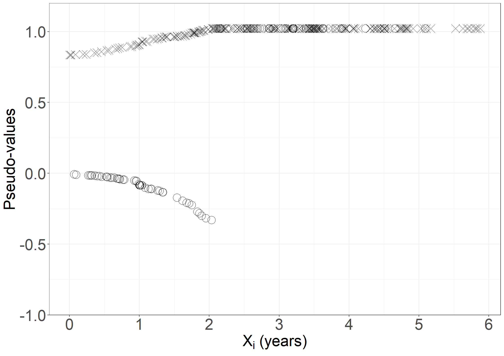
# At 3 years
pseudo_t3 <- subset(pseudo_alltid, tpseudo == times[3])
# Collect data for plot
pseudodata <- data.frame(tpseudo = pseudo_t3$tpseudo / 365.25,
days = pseudo_t3$days,
pseudo = pseudo_t3$pseudo,
failtype = as.factor(pseudo_t3$fail))
fig6.2c <- ggplot(aes(x = days/365.25, y = pseudo, shape = failtype),
data = pseudodata) +
geom_point(size = 6) +
scale_shape_manual("Fail", values = c(4, 1)) +
xlab(expression("X"[i]*" (years)")) +
ylab("Pseudo-values") +
scale_x_continuous(expand = expansion(mult = c(0.05, 0.05)),
breaks = seq(0, 6, 1)) +
scale_y_continuous(expand = expansion(mult = c(0.05, 0.05)),
limits = c(-0.9, 1.1)) +
theme_general_1 +
theme(legend.position="none")
fig6.2c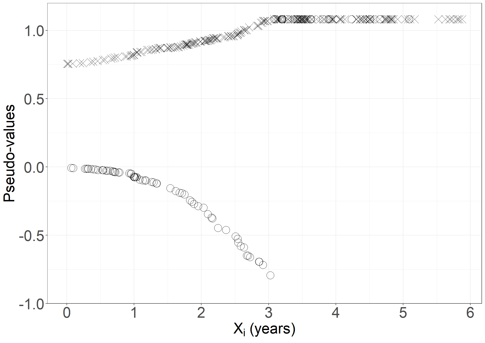
# Collect data for plot year=2
pseudodata <- data.frame(tpseudo = pseudo_t2$tpseudo / 365.25,
days = pseudo_t2$days,
pseudo = pseudo_t2$pseudo,
log2bili = pseudo_t2$log2bili,
bili = pseudo_t2$bili,
alb = pseudo_t2$alb,
tment = pseudo_t2$tment,
id = pseudo_t2$id,
failtype = as.factor(pseudo_t2$fail))
bili_loess <- loess(pseudo ~ bili, data = pseudodata, span = 0.8, degree = 1)
pseudodata$loesspred <- predict(bili_loess)
pseudodata$t_loesspred <- with(
pseudodata, ifelse(loesspred > 0 , log(-log(loesspred)), NA)
)
fig6.3left <- ggplot(aes(x = bili, y = pseudo), data = pseudodata) +
geom_point(size = 4, shape = 4) +
geom_line(aes(x = bili, y = loesspred), linewidth = 1) +
xlab("Bilirubin") +
ylab("Pseudo-values") +
scale_x_continuous(expand = expansion(mult = c(0.05, 0.05))) +
scale_y_continuous(expand = expansion(mult = c(0.05, 0.05)),
breaks = seq(-0.4, 1.2, by = 0.2),
limits = c(-0.4, 1.2)) +
theme_general
fig6.3left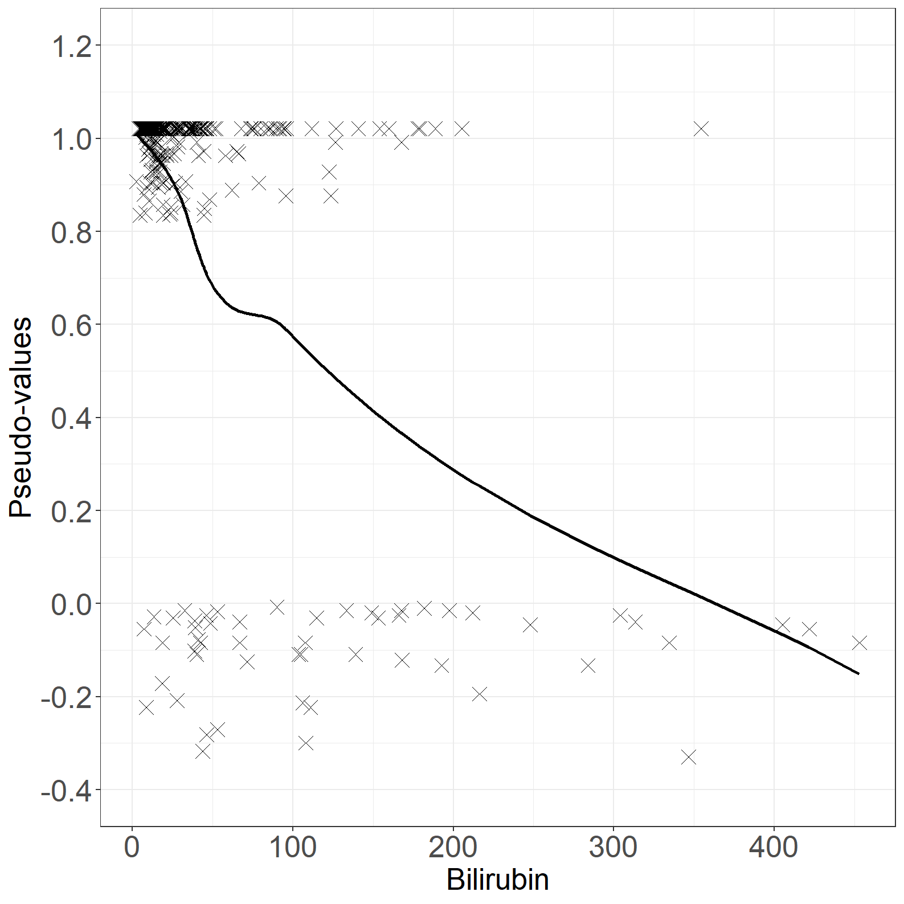
fig6.3right <- ggplot(aes(x = bili, y = t_loesspred), data = pseudodata) +
geom_line(size = 1) +
xlab("Bilirubin") +
ylab("log(-log(predicted pseudo-values))") +
scale_x_continuous(expand = expansion(mult = c(0.05, 0.05))) +
scale_y_continuous(expand = expansion(mult = c(0.05, 0.05)),
breaks = seq(-5, 2, by = 1),
limits = c(-5, 2)) +
theme_general
fig6.3right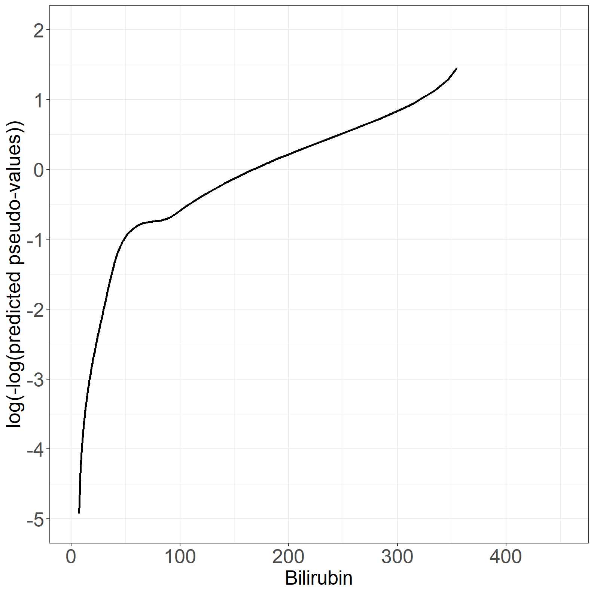
# Loess for log2 bili
log2bili_loess <- loess(pseudo ~ log2bili, data = pseudodata, span = 0.8, degree = 1)
pseudodata$log2bili_loesspred <- predict(log2bili_loess)
pseudodata$t_log2bili_loesspred <- with(pseudodata,
ifelse(log2bili_loesspred > 0 , log(-log(log2bili_loesspred)), NA))
fig6.4left <- ggplot(aes(x = log2bili, y = pseudo), data = pseudodata) +
geom_point(size = 4, shape = 4) +
geom_line(aes(x = log2bili, y = log2bili_loesspred), linewidth = 1) +
xlab(expression("log" [2] * "(bilirubin)")) +
ylab("Pseudo-values") +
scale_x_continuous(expand = expansion(mult = c(0.05, 0.05)), limits = c(1, 9),
breaks = seq(1, 9, by = 1)) +
scale_y_continuous(expand = expansion(mult = c(0.05, 0.05)), breaks = seq(-0.4, 1.2, by = 0.2),
limits = c(-0.4, 1.2)) +
theme_general
fig6.4left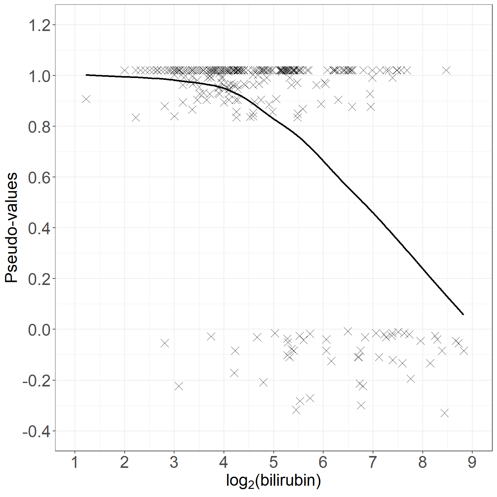
fig6.4right <- ggplot(aes(x = log2bili, y = t_log2bili_loesspred), data = pseudodata) +
geom_line(linewidth = 1) +
xlab(expression("log" [2] * "(bilirubin)")) +
ylab("log(-log(predicted pseudo-values))") +
scale_x_continuous(expand = expansion(mult = c(0.05, 0.05)), limits = c(1, 9),
breaks = seq(1, 9, by = 1)) +
scale_y_continuous(expand = expansion(mult = c(0.05, 0.05)), breaks = seq(-5, 2, by = 1),
limits = c(-5, 2)) +
theme_general
fig6.4right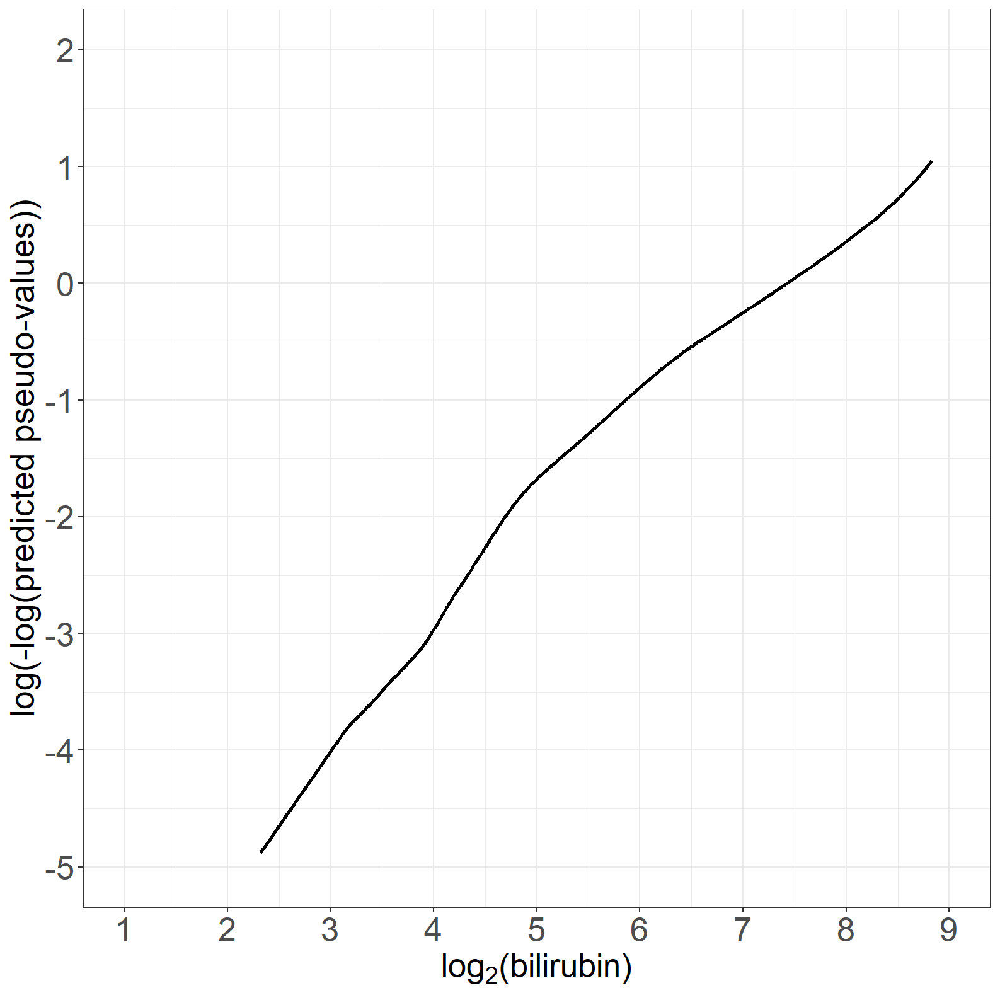
Estimates and SD in the book are from SAS proc genmod.
In R we have at least three ways to estimate:
geese from geepack package for the three time points model the SDs are smaller compared to SASsvyglm from survey package gives comparable SDs to SASeventglm is another option with other issues – see comments in the R codegeese from geepackpackagelibrary(geepack)
# summary function for pseudo-value regression from a geese fit
summgeese<-function(pofit,d=6){
beta<-pofit$beta
SD = sqrt(diag(pofit$vbeta))
round(cbind(
beta = beta,
SD.robust = SD,
exp.beta = exp(beta),
exp.lci = exp(beta-1.96*SD),
exp.uci = exp(beta+1.96*SD),
PVal.N = 2-2*pnorm(abs(beta/SD))),d)
}
# At day 743
# data frame pseudodata countains pseudo-observations day 743
geefit1 <- geese(formula = I(1 - pseudo) ~ tment +alb + log2bili,
data = subset(pseudodata, !is.na(alb)),
id = id,
mean.link = "cloglog")
summgeese(geefit1) beta SD.robust exp.beta exp.lci exp.uci PVal.N
(Intercept) -2.116642 1.326984 0.120435 0.008937 1.622951 0.110695
tment -0.705053 0.369341 0.494082 0.239557 1.019035 0.056269
alb -0.105069 0.034169 0.900263 0.841946 0.962618 0.002105
log2bili 0.835723 0.140429 2.306480 1.751517 3.037282 0.000000# At days 366, 743, 1105
# Select the pseudo-observations at times
times <- c(366, 743, 1105)
pseudo_t1 <- subset(pseudo_alltid, tpseudo == times[1])
pseudo_t2 <- subset(pseudo_alltid, tpseudo == times[2])
pseudo_t3 <- subset(pseudo_alltid, tpseudo == times[3])
pseudo_t <- rbind(pseudo_t1, pseudo_t2, pseudo_t3)
pseudodata_t <- data.frame(tpseudo = pseudo_t$tpseudo,
days = pseudo_t$days,
pseudo = pseudo_t$pseudo,
log2bili = pseudo_t$log2bili,
bili = pseudo_t$bili,
alb = pseudo_t$alb,
tment = pseudo_t$tment,
id = pseudo_t$id,
failtype = as.factor(pseudo_t$fail))
geefit3 <- geese(formula = I(1 - pseudo) ~ tment +alb + log2bili + factor(tpseudo)-1,
data = subset(pseudodata_t, !is.na(alb)),
id = id,
mean.link = "cloglog")
summgeese(geefit3) beta SD.robust exp.beta exp.lci exp.uci PVal.N
tment -0.598536 0.213046 0.549616 0.362002 0.834464 0.004963
alb -0.093907 0.019069 0.910367 0.876970 0.945036 0.000001
log2bili 0.684093 0.071818 1.981972 1.721729 2.281552 0.000000
factor(tpseudo)366 -2.474620 0.829782 0.084195 0.016556 0.428165 0.002861
factor(tpseudo)743 -1.554010 0.810703 0.211399 0.043154 1.035587 0.055255
factor(tpseudo)1105 -1.123233 0.813730 0.325227 0.065997 1.602682 0.167479svyglm from survey packagelibrary(survey)
library(survival) # get bcloglog()
# Thanks to Terry Therneau for this comment:
# It needs one more line to set up compaed to geese, but has 3 advantages:
# 1: naturally deals with missing values in the data
# 2: results follow standard R nomenclature, e.g., the coef and vcov functions work as expected
# 3: geese gives incorrect answers, without warning, if the data set is not sorted in exactly the order it expects
# Also: The bounded cloglog link, bcloglog(), avoid an error message in glm's initial values step. It's found in the survival package.
# summary function for pseudo-value regression from a svyglm fit
summsvy<-function(pofit,d=5){
beta<-pofit$coefficient
SD<-sqrt(diag(pofit$cov.unscaled))
round(cbind(
beta = beta,
SD.robust = SD,
exp.beta = exp(beta),
exp.lci = exp(beta-1.96*SD),
exp.uci = exp(beta+1.96*SD),
PVal.N = 2-2*pnorm(abs(beta/SD))),d)
}
# At days 743
svydata <- svydesign(~id, variables= ~., data=pseudodata, weight= ~1)
svyfit1 <- svyglm(I(1 - pseudo) ~ tment + alb + log2bili,
design=svydata, family= gaussian(link= bcloglog()))
summsvy(svyfit1) beta SD.robust exp.beta exp.lci exp.uci PVal.N
(Intercept) -2.11619 1.32893 0.12049 0.00891 1.62989 0.11129
tment -0.70510 0.36987 0.49406 0.23930 1.02004 0.05660
alb -0.10508 0.03422 0.90026 0.84186 0.96270 0.00213
log2bili 0.83569 0.14064 2.30641 1.75074 3.03845 0.00000# At days 366, 743, 1105
svydata3 <- svydesign(~id, variables= ~., data=pseudodata_t, weight= ~1)
svyfit3 <- svyglm(I(1 - pseudo) ~ tment + alb + log2bili+factor(tpseudo)-1,
design=svydata3, family= gaussian(link= bcloglog()))
summsvy(svyfit3) beta SD.robust exp.beta exp.lci exp.uci PVal.N
tment -0.59853 0.28738 0.54962 0.31292 0.96536 0.03728
alb -0.09391 0.02630 0.91037 0.86462 0.95853 0.00036
log2bili 0.68410 0.09203 1.98198 1.65487 2.37374 0.00000
factor(tpseudo)366 -2.47472 1.14395 0.08419 0.00894 0.79250 0.03052
factor(tpseudo)743 -1.55410 1.12274 0.21138 0.02341 1.90877 0.16629
factor(tpseudo)1105 -1.12332 1.12718 0.32520 0.03570 2.96225 0.31897cumincglm from eventglmpackageNow, using eventglm package. Handling of missing values (here for variable alb) causes some issue, see comment in R code below.
library(eventglm)
# At day 743
# SD differ a bit from from than SAS, geese, and svyglm
egfit1 <- cumincglm(Surv(days, fail) ~ tment + alb + log2bili, time = 743,
data = pbc3, link="cloglog")
summary(egfit1)
Call:
cumincglm(formula = Surv(days, fail) ~ tment + alb + log2bili,
time = 743, link = "cloglog", data = pbc3)
Coefficients:
Estimate Std. Error z value Pr(>|z|)
(Intercept) -2.11633 1.42637 -1.484 0.13788
tment -0.70509 0.38569 -1.828 0.06753 .
alb -0.10507 0.03628 -2.896 0.00378 **
log2bili 0.83570 0.14657 5.702 1.19e-08 ***
---
Signif. codes: 0 '***' 0.001 '**' 0.01 '*' 0.05 '.' 0.1 ' ' 1
(Dispersion parameter for quasi family taken to be 1)
Null deviance: 53.331 on 342 degrees of freedom
Residual deviance: 34.736 on 339 degrees of freedom
(6 observations deleted due to missingness)
AIC: NA
Number of Fisher Scoring iterations: 8# Use of argument subset gives the same
egfit1x <- cumincglm(Surv(days, fail) ~ tment + alb + log2bili, time = 743,
data = pbc3, subset=!is.na(alb), link="cloglog")
summary(egfit1x)
Call:
cumincglm(formula = Surv(days, fail) ~ tment + alb + log2bili,
time = 743, link = "cloglog", data = pbc3, subset = !is.na(alb))
Coefficients:
Estimate Std. Error z value Pr(>|z|)
(Intercept) -2.11633 1.42637 -1.484 0.13788
tment -0.70509 0.38569 -1.828 0.06753 .
alb -0.10507 0.03628 -2.896 0.00378 **
log2bili 0.83570 0.14657 5.702 1.19e-08 ***
---
Signif. codes: 0 '***' 0.001 '**' 0.01 '*' 0.05 '.' 0.1 ' ' 1
(Dispersion parameter for quasi family taken to be 1)
Null deviance: 53.331 on 342 degrees of freedom
Residual deviance: 34.736 on 339 degrees of freedom
AIC: NA
Number of Fisher Scoring iterations: 8# Sub-setting the data is not the way:
# When sub-setting, the pseudo-values are calculated base on the sub-sample,
# which is different from all the above where the full sample is used to
# calculate the pseudo-values
egfit1xx <- cumincglm(Surv(days, fail) ~ tment + alb + log2bili, time = 743,
data = subset(pbc3,!is.na(alb)), link="cloglog")
summary(egfit1xx)
Call:
cumincglm(formula = Surv(days, fail) ~ tment + alb + log2bili,
time = 743, link = "cloglog", data = subset(pbc3, !is.na(alb)))
Coefficients:
Estimate Std. Error z value Pr(>|z|)
(Intercept) -2.11445 1.42986 -1.479 0.13920
tment -0.70619 0.38684 -1.826 0.06792 .
alb -0.10532 0.03642 -2.892 0.00383 **
log2bili 0.83700 0.14731 5.682 1.33e-08 ***
---
Signif. codes: 0 '***' 0.001 '**' 0.01 '*' 0.05 '.' 0.1 ' ' 1
(Dispersion parameter for quasi family taken to be 1)
Null deviance: 53.570 on 342 degrees of freedom
Residual deviance: 34.909 on 339 degrees of freedom
AIC: NA
Number of Fisher Scoring iterations: 8# At days 366, 743, 1105
# For multiple time points we get an error for this code:
# egfit3 <- cumincglm(Surv(days, fail) ~ tment + alb + log2bili, time = c(366, 743, 1105),
# data = pbc3, link="cloglog")
# Error in model.frame.default(formula = formula2i, data = newdatasrt, weights = weights, :
# variable lengths differ (found for '(weights)')
# Try to use argument subset, but get same error
# egfit3x <- cumincglm(Surv(days, fail) ~ tment + alb + log2bili, time = c(366, 743, 1105),
# data = pbc3, subset=!is.na(alb), link="cloglog")
# Have to do sub-setting on data, but this is not the way to do it
# but is in this case VERY close to svyglm results
egfit3xx <- cumincglm(Surv(days, fail) ~ tment + alb + log2bili, time = c(366, 743, 1105),
data = subset(pbc3,!is.na(alb)), link="cloglog")
summary(egfit3xx)
Call:
cumincglm(formula = Surv(days, fail) ~ tment + alb + log2bili,
time = c(366, 743, 1105), link = "cloglog", data = subset(pbc3,
!is.na(alb)))
Coefficients:
Estimate Std. Error z value Pr(>|z|)
(Intercept) -1.11947 1.12726 -0.993 0.320664
factor(pseudo.time)366 -1.35313 0.23361 -5.792 6.94e-09 ***
factor(pseudo.time)743 -0.43081 0.11892 -3.623 0.000292 ***
tment -0.59990 0.28746 -2.087 0.036898 *
alb -0.09416 0.02633 -3.576 0.000349 ***
log2bili 0.68516 0.09219 7.432 1.07e-13 ***
---
Signif. codes: 0 '***' 0.001 '**' 0.01 '*' 0.05 '.' 0.1 ' ' 1
(Dispersion parameter for quasi family taken to be 1)
Null deviance: 169.71 on 1028 degrees of freedom
Residual deviance: 121.65 on 1023 degrees of freedom
AIC: NA
Number of Fisher Scoring iterations: 7pseudosurvThis SAS macro computes pseudo-values based on Kaplan-Meier estimates and is adapted from that described by:
NB: Inside the macro a variable called id is created which will interfere with your identification variable is called id in your data set, in which case you will need to rename your id variable.
* Can also be found on: http://192.38.117.59/~linearpredictors/datafiles/pseudosurv.sas;
* 'noprint plots = none' are included twice in the proc lifetest statement of the MACRO to avoid none important outputs being printed;
%macro pseudosurv(indata,time,dead,howmany,datatau,outdata);
/* The subsequent SAS code is adapted from that described by J.P.Klein,
M.Gerster, P.K.Andersen, S.Tarima, M.Pohar Perme (2008): "SAS and R
functions to compute pseudo-values for censored data regression"
Comp. Meth. Progr. Biomed., vol. 89,pp. 289-300. */
/* MACRO COMPUTES PSEUDOVALUES BASED ON THE KAPLAN-MEIER ESTIMATOR AT EACH
TIME
INPUTS:
INDATA---INPUT DATA SET
TIME--TIME VARIABLE
DEAD---EVENT INDICATOR (1-EVENT, 0-CENSORED)
HOWMANY---SAMPLE SIZE
DATATAU---SUBSET OF INPUT DATA SET AT WHICH PSEUDO VALUES ARE COMPUTED DATA
SET HAS SINGLE VARIABLE TIME
OUTDATA---OUTPUT DATA SET WHICH CONTAINS PSUK,K=1,...,HOWMANY THE PSEUDO
VALUES AT EACH TIME POINT (Note output data set includes orginal data sorted
by time
*/
proc sort data=&indata;
by &time;
data keep; set &datatau;
find=1;
proc sort data=keep; by time;
data point; set &indata;
time=&time;
keep=1;
data point; merge point keep; by time;
keep time find keep;
data useme; set point;
retain temp -1;
if keep = 1 then temp=time;
tuse=temp;
if find ne 1 then delete;
&time=tuse;
run;
/* WORKING DATA SET THAT INCLUDE A SET OF N INDICATORS WHERE FOR THE KTH INDICATOR
THE EVENT IS MISSING */
data newdat; set &indata;
id+1;
array iobs(&howmany) dead1-dead&howmany;
do j=1 to &howmany;
iobs(j)=&dead;
if j=id then iobs(j)=.;
end;
data out; set newdat;
/* COMPUTE KME FOR FULL SAMPLE */
proc lifetest data=newdat noprint plots = none;
time &TIME*&dead(0);
survival out=sall;
data sall; set sall;
sall=survival;
keep &time sall;
%do ip=1 %to &howmany;
/* COMPUTE KME FOR REDUCED SAMPLE */
proc lifetest data=newdat noprint plots = none;
time &time*dead&ip(0);
survival out=stmp;
data stmp; set stmp;
s&ip=survival;
keep &time s&ip;
/*merge KMEs AND COMPUTE PSEUDOVALUES FOR OBSERVATION IP*/
data pstmp; merge sall stmp; by &time;
retain stemp 1;
if s&ip=. then s&ip=stemp;
stemp=s&ip;
psu&ip=&howmany*sall- (&howmany-1)*s&ip;
data out; merge out pstmp useme ; by &time;
if find ne 1 then delete;
keep &time psu1-psu&ip;
%end;
data out; set out;
retain dup -1;
if &time=dup then delete;
else dup=&time;
jd+1;
data io; set out;
array ps psu1-psu&howmany;
do id=1 to &howmany;
pseudo=ps(id);
time=&time;
output;
end;
keep time id pseudo jd;
proc sort data=io ;
by id;
data a; set &indata;
id+1;
data io; merge a io; by id;
proc sort data=io; by jd;
proc sort data=&datatau;
by time;
data taus; set &datatau ;
jd+1;
tpseudo=time;
keep jd tpseudo;
data &outdata; merge io taus; by jd;
drop jd id &time &dead;
run;
%mend;# Rename the id variable ;
data pbc3;
set pbc3;
rename id=ptno;
run;
proc sort data=pbc3;
by days;
run;
data timepoints;
input time;
datalines;
366
743
1105
;
run;
%pseudosurv(pbc3, days, fail, 349, timepoints, outdata);
* At day 743 ----------------------------------------------------------------;
proc genmod data=outdata;
where time=743;
class ptno;
fwdlink link=log(-log(_mean_));
invlink ilink=exp(-exp(_xbeta_));
model pseudo=tment alb log2bili / dist=normal noscale;
repeated subject=ptno/corr=ind;
run;
Analysis Of GEE Parameter Estimates
Empirical Standard Error Estimates
Standard 95% Confidence
Parameter Estimate Error Limits Z Pr > |Z|
Intercept -2.1167 1.3270 -4.7175 0.4842 -1.60 0.1107
tment -0.7051 0.3693 -1.4289 0.0188 -1.91 0.0563
alb -0.1051 0.0342 -0.1720 -0.0381 -3.08 0.0021
log2bili 0.8357 0.1404 0.5605 1.1110 5.95 <.0001
* At days 366 , 743, 1105 ----------------------------------------------------;
proc genmod data=outdata;
class ptno time;
fwdlink link=log(-log(_mean_));
invlink ilink=exp(-exp(_xbeta_));
model pseudo=tment alb log2bili time / dist=normal noscale noint;
repeated subject=ptno/corr=ind;
run;
Analysis Of GEE Parameter Estimates
Empirical Standard Error Estimates
Standard 95% Confidence
Parameter Estimate Error Limits Z Pr > |Z|
Intercept 0.0000 0.0000 0.0000 0.0000 . .
tment -0.5985 0.2870 -1.1610 -0.0361 -2.09 0.0370
alb -0.0939 0.0263 -0.1454 -0.0424 -3.58 0.0003
log2bili 0.6841 0.0919 0.5040 0.8642 7.44 <.0001
time 366 -2.4746 1.1423 -4.7135 -0.2357 -2.17 0.0303
time 743 -1.5540 1.1211 -3.7514 0.6434 -1.39 0.1657
time 1105 -1.1232 1.1256 -3.3293 1.0829 -1.00 0.3183# At time year c(1, 2, 3)
fit2 <- geese(formula = I(1 - pseudo) ~ as.factor(tpseudo) + log2bili + alb + tment - 1,
data = subset(pseudodata_t, !is.na(alb)),
id = id,
mean.link = "cloglog",
variance = "gaussian",
scale.value = 0,
scale.fix = 1)
pseudodata_t$pred <- rep(NA, nrow(pseudodata_t))
# At time 1
pseudodata_t[pseudodata_t$tpseudo == times[1] / 365.25,]$pred <-
with(pseudodata_t[pseudodata_t$tpseudo == times[1] / 365.25,],
fit2$beta[1] + fit2$beta[4]*log2bili + fit2$beta[5]*alb + fit2$beta[6]*tment)
# At time 2
pseudodata_t[pseudodata_t$tpseudo == times[2] / 365.25,]$pred <-
with(pseudodata_t[pseudodata_t$tpseudo == times[2] / 365.25,],
fit2$beta[2] + fit2$beta[4]*log2bili + fit2$beta[5]*alb + fit2$beta[6]*tment)
# At time 3
pseudodata_t[pseudodata_t$tpseudo == times[3] / 365.25,]$pred <-
with(pseudodata_t[pseudodata_t$tpseudo == times[3] / 365.25,],
fit2$beta[3] + fit2$beta[4]*log2bili + fit2$beta[5]*alb + fit2$beta[6]*tment)
# Transform back
pseudodata_t$res <- with(pseudodata_t, pseudo - exp(-exp(pred)))
pseudodata_t$time <- as.factor(pseudodata_t$tpseudo * 365.25)
# Make loess smooth per time
log2bili_res_loess_1 <- loess(res ~ log2bili,
data = subset(pseudodata_t, time == 366), span = 0.7, degree = 1)
log2bili_res_loess_2 <- loess(res ~ log2bili,
data = subset(pseudodata_t, time == 743), span = 0.7, degree = 1)
log2bili_res_loess_3 <- loess(res ~ log2bili,
data = subset(pseudodata_t, time == 1105), span = 0.7, degree = 1)
log2bili_res_pred_1 <- predict(log2bili_res_loess_1, newdata = subset(pseudodata_t, time == 366))
log2bili_res_pred_2 <- predict(log2bili_res_loess_2, newdata = subset(pseudodata_t, time == 743))
log2bili_res_pred_3 <- predict(log2bili_res_loess_3, newdata = subset(pseudodata_t, time == 1105))
pseudodata_t$log2bili_res_pred <- c(log2bili_res_pred_1, log2bili_res_pred_2, log2bili_res_pred_3)
fig6.5 <- ggplot(aes(x = log2bili, y = res, shape = time), data = pseudodata_t) +
geom_line(aes(x = log2bili, y = log2bili_res_pred , linetype = time), linewidth = 1) +
geom_point(size = 3) +
scale_shape_manual("Year", values = c(4, 2, 0), labels = c("1", "2", "3")) +
scale_linetype_manual("Year", values = c("dashed", "solid", "dotted"), labels = c("1", "2", "3")) +
xlab(expression("log" [2] * "(bilirubin)")) +
ylab("Pseudo-residuals") +
scale_x_continuous(expand = expansion(mult = c(0.05, 0.05)), limits = c(1, 9),
breaks = seq(1, 9, by = 1)) +
scale_y_continuous(expand = expansion(mult = c(0.05, 0.05)), breaks = seq(-2, 1, by = 1),
limits = c(-2, 1)) +
theme_general +
theme(legend.box = "vertical",
text = element_text(size=20),
legend.key.size = unit(1.5, 'cm'),
legend.text = element_text(size = 20))
fig6.5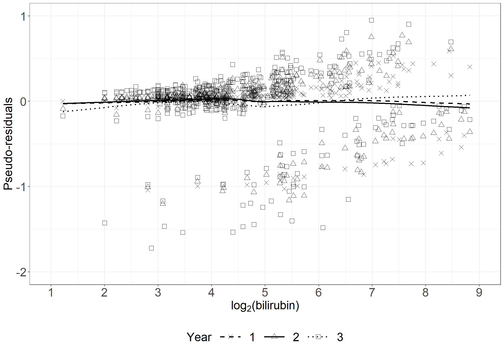
# At days 366 , 743, 1105 using link function "-log"
# No default link function "-log" R, thus add "-" in front of all beta estimates
summsvy(svyglm(pseudo ~ tment + alb + bili + factor(tpseudo)-1 ,
design=svydata3, family=gaussian(link=blog()))) beta SD.robust exp.beta exp.lci exp.uci PVal.N
tment 0.04839 0.03111 1.04958 0.98748 1.11558 0.11989
alb 0.00969 0.00319 1.00974 1.00344 1.01607 0.00241
bili -0.00419 0.00079 0.99582 0.99427 0.99737 0.00000
factor(tpseudo)366 -0.34027 0.14239 0.71158 0.53830 0.94065 0.01686
factor(tpseudo)743 -0.41202 0.14523 0.66231 0.49824 0.88040 0.00455
factor(tpseudo)1105 -0.50754 0.14699 0.60197 0.45129 0.80296 0.00055* At days 366 , 743, 1105 using link function "-log";
proc genmod data=outdata;
class ptno time;
fwdlink link=-log(_mean_);
invlink ilink=exp(-_xbeta_);
model pseudo=tment alb bili time /dist=normal noscale noint;
repeated subject=ptno / corr=ind;
run;
Analysis Of GEE Parameter Estimates
Empirical Standard Error Estimates
Standard 95% Confidence
Parameter Estimate Error Limits Z Pr > |Z|
Intercept 0.0000 0.0000 0.0000 0.0000 . .
tment -0.0484 0.0311 -0.1093 0.0125 -1.56 0.1194
alb -0.0097 0.0032 -0.0159 -0.0034 -3.04 0.0024
bili 0.0042 0.0008 0.0026 0.0057 5.29 <.0001
time 366 0.3403 0.1422 0.0616 0.6189 2.39 0.0167
time 743 0.4120 0.1450 0.1278 0.6963 2.84 0.0045
time 1105 0.5075 0.1468 0.2199 0.7952 3.46 0.0005# Create Figure 6.6 (a) - done earlier
fig6.6left <- fig6.3left
fig6.6left# Same as earlier:
bili_loess <- loess(pseudo ~ bili, data = pseudodata, span = 0.8, degree = 1)
pseudodata$loesspred <- predict(bili_loess)
# Use log-trans instead of cloglog
pseudodata$log_loesspred <- with(pseudodata,
ifelse(loesspred > 0 , -log(loesspred), NA))
fig6.6right <- ggplot(aes(x = bili, y = log_loesspred), data = pseudodata) +
geom_line(linewidth = 1) +
xlab("Bilirubin") +
ylab("-log(predicted pseudo-values)") +
scale_x_continuous(expand = expansion(mult = c(0.05, 0.05))) +
scale_y_continuous(expand = expansion(mult = c(0.05, 0.05)), breaks = seq(-1, 3, by = 1),
limits = c(-1, 3)) +
theme_general
fig6.6right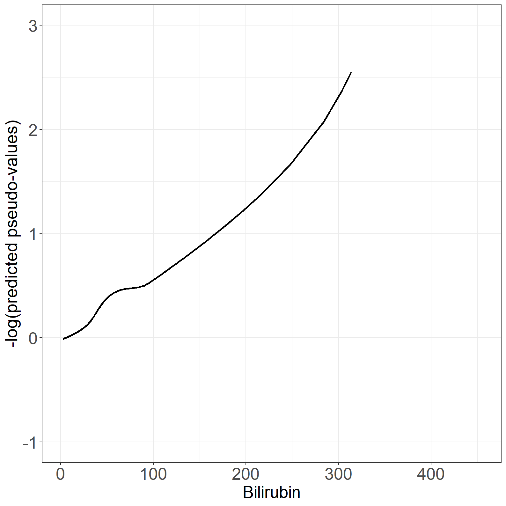
# Use regression estimates from fit2
pseudodata_t$pred <- rep(NA, nrow(pseudodata_t))
# At time 1
pseudodata_t[pseudodata_t$tpseudo == times[1] / 365.25,]$pred <-
with(pseudodata_t[pseudodata_t$tpseudo == times[1] / 365.25,],
fit2$beta[1] + fit2$beta[4]*bili + fit2$beta[5]*alb + fit2$beta[6]*tment)
# At time 2
pseudodata_t[pseudodata_t$tpseudo == times[2] / 365.25,]$pred <-
with(pseudodata_t[pseudodata_t$tpseudo == times[2] / 365.25,],
fit2$beta[2] + fit2$beta[4]*bili + fit2$beta[5]*alb + fit2$beta[6]*tment)
# At time 3
pseudodata_t[pseudodata_t$tpseudo == times[3] / 365.25,]$pred <-
with(pseudodata_t[pseudodata_t$tpseudo == times[3] / 365.25,],
fit2$beta[3] + fit2$beta[4]*bili + fit2$beta[5]*alb + fit2$beta[6]*tment)
# Transform back
pseudodata_t$res <- with(pseudodata_t, pseudo - exp(pred))
pseudodata_t$time <- as.factor(pseudodata_t$tpseudo * 365.25)
# Make loess smooth per time
bili_res_loess_1 <- loess(res ~ bili,
data = subset(pseudodata_t, time == 366),
span = 0.7, degree = 1)
bili_res_loess_2 <- loess(res ~ bili,
data = subset(pseudodata_t, time == 743),
span = 0.7, degree = 1)
bili_res_loess_3 <- loess(res ~ bili,
data = subset(pseudodata_t, time == 1105),
span = 0.7, degree = 1)
bili_res_pred_1 <- predict(bili_res_loess_1,
newdata = subset(pseudodata_t, time == 366))
bili_res_pred_2 <- predict(bili_res_loess_2,
newdata = subset(pseudodata_t, time == 743))
bili_res_pred_3 <- predict(bili_res_loess_3,
newdata = subset(pseudodata_t, time == 1105))
pseudodata_t$bili_res_pred <- c(bili_res_pred_1,
bili_res_pred_2,
bili_res_pred_3)
# Create Figure
fig6.7 <- ggplot(aes(x = bili, y = res, shape = time), data = pseudodata_t) +
geom_line(aes(x = bili, y = bili_res_pred , linetype = time), linewidth = 1) +
geom_point(size = 3) +
scale_shape_manual("Year", values = c(4, 2, 0),
labels = c("1", "2", "3")) +
scale_linetype_manual("Year",
values = c("dashed", "solid", "dotted"),
labels = c("1", "2", "3")) +
xlab(expression("Bilirubin")) +
ylab("Pseudo-residuals") +
scale_x_continuous(expand = expansion(mult = c(0.05, 0.05)),
limits = c(0, 500),
breaks = seq(0, 500, by = 100)) +
scale_y_continuous(expand = expansion(mult = c(0.05, 0.05)),
breaks = seq(-2, 1, by = 1),
limits = c(-2, 1)) +
theme_general +
theme(legend.box = "vertical",
text = element_text(size=20),
legend.key.size = unit(2, 'cm'),
legend.text = element_text(size = 20))
fig6.7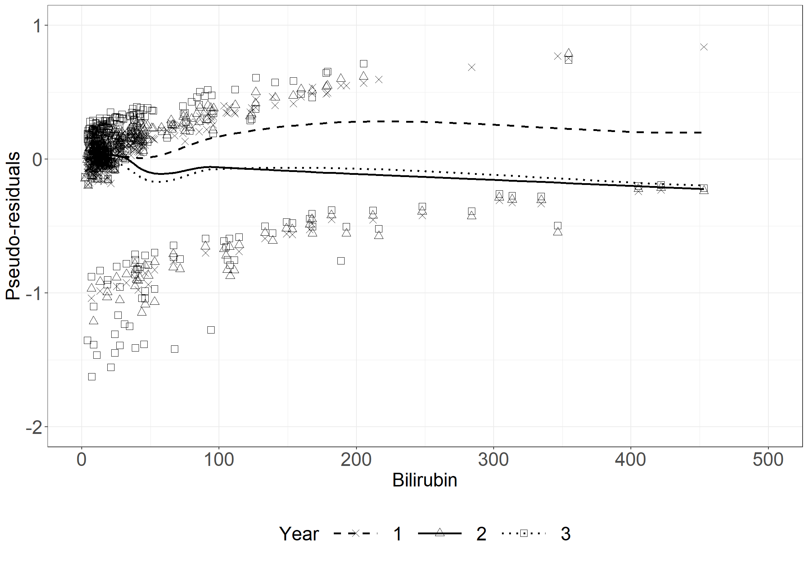
Here, geese, svyglm, and rmeanglm (from package eventglm) give very similar results.
# Calculate pseudo-observations of the restricted mean and merge with pbc3
datarmean3<-cbind(pbc3,pseudormean=pseudomean(pbc3$days/365.25,pbc3$fail,tmax = 3))
# geese
summgeese(geese(pseudormean ~ tment + alb + log2bili, id = id,
data = subset(datarmean3, !is.na(alb)),
family = "gaussian", mean.link = "identity",
corstr = "independence")) beta SD.robust exp.beta exp.lci exp.uci PVal.N
(Intercept) 2.825598 0.346121 16.871036 8.560865 33.248026 0.000000
tment 0.147813 0.072936 1.159296 1.004870 1.337455 0.042703
alb 0.022512 0.006811 1.022768 1.009204 1.036513 0.000949
log2bili -0.243093 0.031982 0.784199 0.736550 0.834930 0.000000# svyglm
svydata <- svydesign(~id, variables= ~., data=datarmean3, weight= ~1)
summsvy(svyglm(pseudormean ~ tment + alb + log2bili, design=svydata,
family= gaussian(link="identity"))) beta SD.robust exp.beta exp.lci exp.uci PVal.N
(Intercept) 2.82560 0.34662 16.87104 8.55253 33.28043 0.00000
tment 0.14781 0.07304 1.15930 1.00466 1.33773 0.04300
alb 0.02251 0.00682 1.02277 1.00919 1.03653 0.00097
log2bili -0.24309 0.03203 0.78420 0.73648 0.83500 0.00000# rmeanglm from package eventglm
summary(rmeanglm(Surv(days/365.25, fail) ~ tment + alb + log2bili,time = 3,
data = pbc3, link="identity"))
Call:
rmeanglm(formula = Surv(days/365.25, fail) ~ tment + alb + log2bili,
time = 3, link = "identity", data = pbc3)
Coefficients:
Estimate Std. Error z value Pr(>|z|)
(Intercept) 2.825598 0.353204 8.000 1.25e-15 ***
tment 0.147813 0.073915 2.000 0.0455 *
alb 0.022512 0.006951 3.238 0.0012 **
log2bili -0.243093 0.032626 -7.451 9.27e-14 ***
---
Signif. codes: 0 '***' 0.001 '**' 0.01 '*' 0.05 '.' 0.1 ' ' 1
(Dispersion parameter for quasi family taken to be 1)
Null deviance: 213.75 on 342 degrees of freedom
Residual deviance: 152.10 on 339 degrees of freedom
(6 observations deleted due to missingness)
AIC: NA
Number of Fisher Scoring iterations: 2proc rmstregproc rmstreg data=pbc3 tau=3;
model years*status(0)=tment alb log2bili / link=linear;
run;
Analysis of Parameter Estimates
Standard 95% Confidence Chi-
Parameter DF Estimate Error Limits Square Pr > ChiSq
Intercept 1 2.8263 0.3467 2.1469 3.5058 66.47 <.0001
tment 1 0.1480 0.0730 0.0048 0.2911 4.11 0.0427
alb 1 0.0225 0.0068 0.0092 0.0359 10.92 0.0010
log2bili 1 -0.2435 0.0320 -0.3063 -0.1808 57.83 <.0001pseudomeanSAS macro for computing pseudo-values of the restricted mean based on Kaplan-Meier estimates.
NB: Inside the macro a variable called id is created which will interfere with your identification variable is called id in your data set, in which case you will need to rename your id variable.
%macro pseudomean(indata,time,dead,howmany,tmax,outdata);
/* MACRO ARGUMENTS
INDATA--NAME OF INPUT DATA SET
TIME--NAME OF TIME VARIABLE
DEAD--NAME OF EVENT INDICATOR VARIABLE--(1-DEAD,0-CENSORED)
HOWMANY--SAMPLE SIZE
TMAX--UPPER LIMIT OF INTEGRATION FOR RESTRICTED MEAN
OUTDATA--NAME OF OUTPUT DATA SET WITH PSEUDOVALUES FPR RESTRICTED
MEAN IN VARIABLE "PSUMEAN" */
/* CREATE A DATA SET WHERE EVERYTHING ABOVE TMAX IS CENSORED */
DATA work; SET &indata;
restime = MIN(&tmax, &time);
resdead = &dead;
IF restime EQ &tmax THEN resdead = 0;
/* CREATE DATA SET WITH SET OF INDICATORS DEADK THAT HAS MISSING VALUE
FOR KTH OBSERVATION, K=1,...,HOWMANY*/
DATA work; SET work;
id+1;
ARRAY iobs(&howmany) dead1-dead&howmany;
DO j = 1 TO &howmany;
iobs(j) = resdead;
IF j = id THEN iobs(j) = .;
END;
/* COMPUTE RESTRICTED MEAN FOR COMPLETE SAMPLE USING PROC LIFETEST */
PROC LIFETEST DATA = work OUTSURV = km ;
TIME restime*resdead(0);
ODS SELECT MEANS;
ODS OUTPUT MEANS = mall;
RUN;
DATA km; SET km;
IF _CENSOR_ EQ 0;
PROC SORT DATA=km;
BY restime;
RUN;
DATA km; SET km END=LAST;
IF NOT(LAST) THEN DELETE;
area = (&tmax - restime)*survival;
KEEP area;
DATA psu; MERGE km mall;
meanall = mean + area;
KEEP meanall;
%DO ip = 1 %TO &howmany;
/* COMPUTE RESTRICTED MEAN FOR SAMPLE WITH IPTH OBSERVATION DELETED
USING PROC LIFETEST */
PROC LIFETEST DATA = work OUTSURV = km1 ;
TIME restime*dead&ip(0);
ODS SELECT means;
ODS OUTPUT MEANS = m1;
RUN;
DATA km1; SET km1;
IF _CENSOR_ EQ 0;
PROC SORT DATA = km1;
BY restime;
RUN;
DATA km1; SET km1 END=LAST;
IF NOT(LAST) THEN DELETE;
area = (&tmax - restime)*survival;
KEEP area;
DATA km1; MERGE km1 m1;
mean = mean + area;
KEEP mean;
/* COMPUTE PSEUDOVALUE FOR IPTH OBSERVATION*/
DATA psu; MERGE psu km1;
psu&ip=&howmany*meanall-(&howmany-1)*mean;
%END;
/* TRANSPOSE DATASET AND MERGE WITH RAW DATA*/
DATA out; SET psu;
ARRAY y(&howmany) psu1-psu&howmany;
DO j = 1 TO &howmany;
psumean=y(j);
OUTPUT;
END;
KEEP psumean;
DATA &outdata; MERGE &indata out;
run;
%MEND;%pseudomean(pbc3,years,fail,349,3,outmean3);
proc genmod data=outmean3;
class ptno;
model psumean = tment alb log2bili /dist=normal;
repeated subject=ptno / corr=ind;
run;
Analysis Of GEE Parameter Estimates
Empirical Standard Error Estimates
Standard 95% Confidence
Parameter Estimate Error Limits Z Pr > |Z|
Intercept 2.8256 0.3461 2.1472 3.5040 8.16 <.0001
tment 0.1478 0.0729 0.0049 0.2908 2.03 0.0427
alb 0.0225 0.0068 0.0092 0.0359 3.31 0.0009
log2bili -0.2431 0.0320 -0.3058 -0.1804 -7.60 <.0001# Collect data for plot
pseudodata <- data.frame(days = outmean3$days,
pseudo = outmean3$pseudo,
failtype = as.factor(outmean3$fail))
fig6.8 <- ggplot(aes(x = days / 365.25, y = pseudo, shape = failtype), data = pseudodata) +
geom_point(size = 6) +
scale_shape_manual("Fail", values = c(4, 1)) +
xlab(expression("X"[i]*" (years)")) +
ylab("Pseudo-values") +
scale_x_continuous(expand = expansion(mult = c(0.05, 0.05)), limits = c(0, 6),
breaks = seq(0, 6, by = 1)) +
scale_y_continuous(expand = expansion(mult = c(0.05, 0.05)), limits = c(0, 4)) +
theme_general +
theme(legend.position="none")
fig6.8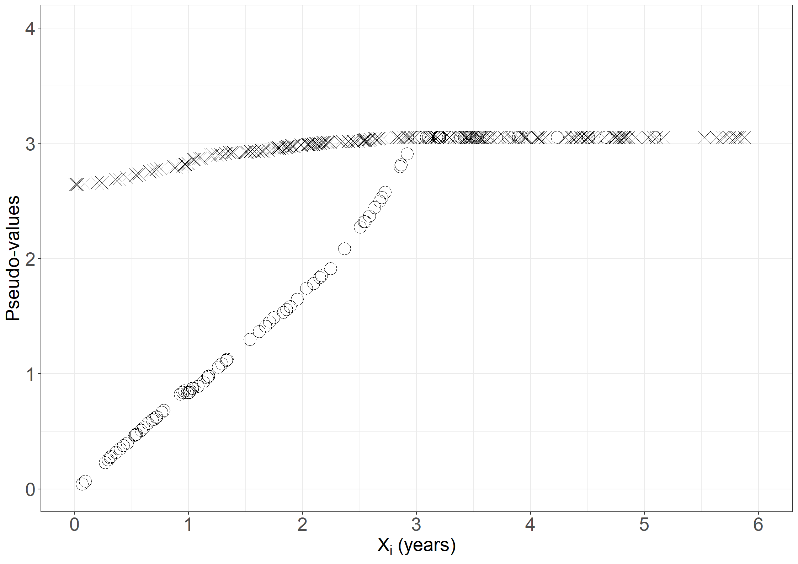
# Loess for log2 bili
log2bili_loess <- loess(pseudo ~ log2bili, data = outmean3, span = 0.8, degree = 1)
outmean3$log2bili_loesspred <- predict(log2bili_loess)
#outmean3$t_log2bili_loesspred <- with(outmean3,
# ifelse(log2bili_loesspred > 0 ,
# log(log2bili_loesspred/(1-log2bili_loesspred)), NA))
fig6.9 <- ggplot(aes(x = log2bili, y = pseudo), data = outmean3) +
geom_point(size = 6, shape = 4) +
geom_line(aes(x = log2bili, y = log2bili_loesspred), linewidth = 1) +
xlab(expression("log" [2] * "(bilirubin)")) +
ylab("Pseudo-values") +
scale_x_continuous(expand = expansion(mult = c(0.01, 0.05)), limits = c(1, 9),
breaks = seq(1, 9, by = 1)) +
scale_y_continuous(expand = expansion(mult = c(0.01, 0.05)), breaks = seq(0, 4, by = 1),
limits = c(0, 4)) +
theme_general
fig6.9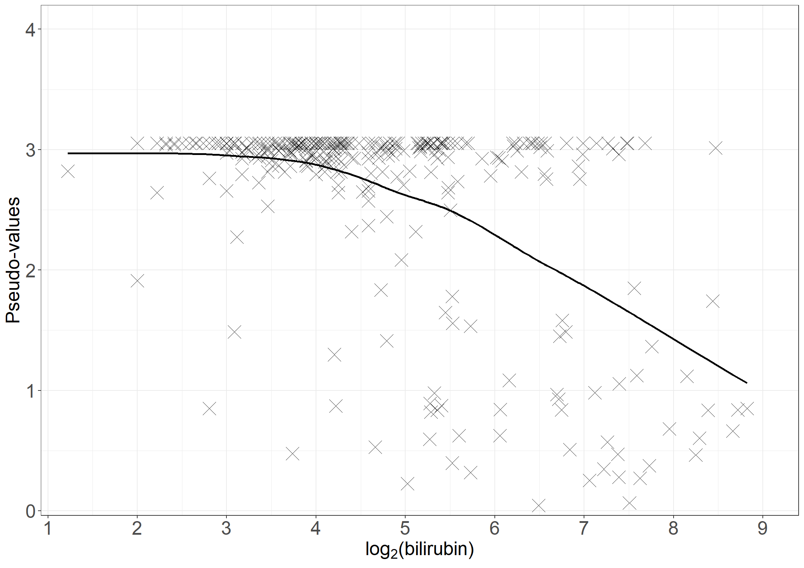
# Calculate pseudo-values based on Aalen-Johansen estimates using pseudoci()
# and merge with pbc3 data
ci2 <- pseudoci(pbc3$days/365.25, pbc3$status,tmax = 2)
dataci2 <- cbind(pbc3,
pseudo.trans = as.vector(ci2$pseudo[[1]]),
pseudo.death = as.vector(ci2$pseudo[[2]]))
# Fit models
geese_logit <- geese(pseudo.death ~ tment , id = id,
data = dataci2,
family = "gaussian", mean.link = "logit",
corstr = "independence", scale.fix = FALSE)
summgeese(geese_logit) beta SD.robust exp.beta exp.lci exp.uci PVal.N
(Intercept) -2.219619 0.266253 0.108651 0.064475 0.183093 0.000000
tment 0.111654 0.369947 1.118126 0.541484 2.308852 0.762796geese_cloglog <- geese(pseudo.death ~ tment, id = id,
data = dataci2,
family = "gaussian", mean.link = "cloglog",
corstr = "independence", scale.fix = FALSE)
summgeese(geese_cloglog) beta SD.robust exp.beta exp.lci exp.uci PVal.N
(Intercept) -2.271634 0.252982 0.103144 0.062820 0.169350 0.000000
tment 0.105795 0.350554 1.111593 0.559175 2.209754 0.762811geese_logit <- geese(pseudo.death ~ tment + alb + log2bili, id = id,
data = subset(dataci2, !is.na(alb)),
family = "gaussian", mean.link = "logit",
corstr = "independence", scale.fix = FALSE)
summgeese(geese_logit) beta SD.robust exp.beta exp.lci exp.uci PVal.N
(Intercept) -0.486188 1.786601 0.614966 0.018538 20.400294 0.785522
tment -0.573544 0.505353 0.563525 0.209290 1.517322 0.256401
alb -0.143586 0.048657 0.866247 0.787452 0.952926 0.003168
log2bili 0.712280 0.187606 2.038634 1.411385 2.944646 0.000147geese_cloglog <- geese(pseudo.death ~ tment + alb + log2bili, id = id,
data = subset(dataci2, !is.na(alb)),
family = "gaussian", mean.link = "cloglog",
corstr = "independence", scale.fix = FALSE)
summgeese(geese_cloglog) beta SD.robust exp.beta exp.lci exp.uci PVal.N
(Intercept) -0.791914 1.499176 0.452977 0.023986 8.554614 0.597338
tment -0.518744 0.424131 0.595268 0.259230 1.366910 0.221301
alb -0.114153 0.037407 0.892122 0.829054 0.959988 0.002276
log2bili 0.569410 0.145153 1.767224 1.329642 2.348815 0.000088svydata <- svydesign(~id, variables= ~., data=dataci2, weight= ~1)
svyfit_logit <- svyglm(pseudo.death ~ tment,
design=svydata, family= gaussian(link=blogit()))
summsvy(svyfit_logit) beta SD.robust exp.beta exp.lci exp.uci PVal.N
(Intercept) -2.21962 0.26663 0.10865 0.06443 0.18323 0.00000
tment 0.11165 0.37048 1.11813 0.54092 2.31126 0.76313svyfit_cloglog <- svyglm(pseudo.death ~ tment,
design=svydata, family= gaussian(link=bcloglog()))
summsvy(svyfit_cloglog) beta SD.robust exp.beta exp.lci exp.uci PVal.N
(Intercept) -2.27163 0.25334 0.10314 0.06278 0.16947 0.00000
tment 0.10579 0.35106 1.11159 0.55862 2.21194 0.76314svyfit_logit <- svyglm(pseudo.death ~ tment + alb + log2bili,
design=svydata, family= gaussian(link=blogit()))
summsvy(svyfit_logit) beta SD.robust exp.beta exp.lci exp.uci PVal.N
(Intercept) -0.48606 1.78915 0.61505 0.01845 20.50513 0.78588
tment -0.57356 0.50607 0.56352 0.20899 1.51943 0.25706
alb -0.14359 0.04873 0.86624 0.78734 0.95305 0.00321
log2bili 0.71227 0.18787 2.03862 1.41064 2.94616 0.00015svyfit_cloglog <- svyglm(pseudo.death ~ tment + alb + log2bili,
design=svydata, family= gaussian(link=bcloglog()))
summsvy(svyfit_cloglog) beta SD.robust exp.beta exp.lci exp.uci PVal.N
(Intercept) -0.79221 1.50134 0.45284 0.02388 8.58844 0.59773
tment -0.51873 0.42475 0.59528 0.25892 1.36860 0.22199
alb -0.11415 0.03746 0.89213 0.82897 0.96010 0.00231
log2bili 0.56942 0.14536 1.76724 1.32910 2.34980 0.00009pseudoci andTo use the macro pseudoci we need the macro cuminc:
%macro cuminc(datain,x,re,de,dataout,cir,cid);
/* THIS MACRO COMPUTES THE CUMULATIVE INCIDENCE FUNCTIONS FOR
BOTH COMPETING RISKS USING PROC PHREG OUTPUT
INPUTS TO MACRO
DATAIN--NAME OF INPUT DATA SET CONTAINING
X--TIME TO EVENT
RE--INDICATOR OF FIRST COMPETING RISK (1-YES, 0-NO)
DE--INDICATOR OF SECOND COMPETING RISK
DATAOUT--NAME OF OUTPUT DATA SET CONTAINING
CIR--CUMULATIVE INCIDENCE FUNCTION FOR 1ST COMPETING RISK
CID--CUMULATIVE INCIDENCE FUNCTION FOR 2ST COMPETING RISK
*/
data work; set &datain;
t=&x;
r=&re;
d=&de;
zero=0;
/* COMPUTE CRUDE CUMUALTIVE HAZARD FOR FIRST COMPETING RISK */
proc phreg data=work noprint;
model t*r(0)=zero;
output out=rel logsurv=chr /method=emp;
/* COMPUTE CRUDE CUMUALTIVE HAZARD FOR SECOND COMPETING RISK */
proc phreg data=work noprint;
model t*d(0)=zero;
output out=dead logsurv=chd /method=emp;
/* COMPUTE cumualtive incidence */
data both; merge rel dead; by t;
retain s 1
retain cr 0;
retain cd 0;
retain cumincr 0;
retain cumincd 0;
hr=-(cr+chr);
hd=-(cd+chd);
/* NOTE HR AND HD ARE THE JUMPS IN THE CUMUALTIVE CRUDE HAZARDS AT THIS TIME */
cr=-chr;
cd=-chd;
cir=cumincr+hr*s;
cumincr=cir;
cid=cumincd+hd*s;
cumincd=cid;
s=s*(1-hr-hd);
/* NOTE S IS KAPLAN-MEIER ESTIMATE IGNORING CAUSE OF FAILURE */
data &dataout; set both;
&x=t;
&cir=cir; &cid=cid;
keep &x &cir &cid;
run;
%mend;* NB: Inside the macros below a variable called `id` is created which will interfere
with your identification variable is called `id` in your data set,
in which case you will need to rename your `id` variable;
* create indicator variables for each competing risk as required by the macro;
proc import out=pbc3
datafile="data/pbc3.csv"
dbms=csv replace;
run;
data pbc3;
set pbc3;
log2bili=log2(bili);
years=days/365.25;
trans=status=1;
death=status=2;
rename id=ptno;
run;
data timepoint;
input time;
datalines;
2
;
run;
%pseudoci(pbc3,years,trans,death,349,timepoint,cumincpv1);
* rpseudo: transplant;
* dpseudo: death;
* logit link function;
proc genmod data=cumincpv1;
class ptno;
model dpseudo = tment / dist=normal noscale link=logit;
repeated subject=ptno / corr=ind;
run;
proc genmod data=cumincpv1;
class ptno;
model dpseudo = tment alb log2bili / dist=normal noscale link=logit;
repeated subject=ptno / corr=ind;
run;
* cloglog link function;
proc genmod data=cumincpv1;
class ptno;
fwdlink link = log(-log(1-_mean_));
invlink ilink = 1 - exp(-exp(_xbeta_));
model dpseudo = tment / dist=normal noscale ;
repeated subject=ptno / corr=ind;
run;
proc genmod data=cumincpv1;
class ptno;
fwdlink link = log(-log(1-_mean_));
invlink ilink = 1 - exp(-exp(_xbeta_));
model dpseudo = tment alb log2bili / dist=normal noscale ;
repeated subject=ptno / corr=ind;
run;#calculate the pseudo-observations
pseudo <- pseudoci(time=pbc3$days/365.25,event=pbc3$status,tmax=c(1,2,3))
#rearrange the data into a long data set, use only pseudo-observations for death,
# i.e., status=2: pseudo$pseudo[[2]],
b <- NULL
for(it in 1:length(pseudo$time)){
b <- rbind(b,cbind(pbc3,death.pseudo = pseudo$pseudo[[2]][,it],
tpseudo = pseudo$time[it],idno=1:nrow(pbc3)))
}
dataci3 <- b[order(b$idno),]
# geese
summgeese(geese(death.pseudo ~ tment + alb + log2bili + factor(tpseudo),
data = subset(dataci3,!is.na(alb)), id=idno,
family=gaussian, mean.link = "cloglog", corstr="independence")) beta SD.robust exp.beta exp.lci exp.uci PVal.N
(Intercept) -0.261582 1.344886 0.769832 0.055158 10.744500 0.845783
tment -0.509819 0.348199 0.600604 0.303525 1.188452 0.143150
alb -0.106465 0.031640 0.899006 0.844949 0.956522 0.000766
log2bili 0.517712 0.116717 1.678183 1.335020 2.109555 0.000009
factor(tpseudo)1 -1.090629 0.225800 0.336005 0.215845 0.523059 0.000001
factor(tpseudo)2 -0.451689 0.132065 0.636552 0.491380 0.824613 0.000626# svyglm
svydata3 <- svydesign(~idno, variables= ~., data=dataci3, weight= ~1)
summsvy(svyglm(death.pseudo ~ tment + alb + log2bili+factor(tpseudo)-1,
design=svydata3, family= gaussian(link= bcloglog()))) beta SD.robust exp.beta exp.lci exp.uci PVal.N
tment -0.50982 0.34870 0.60061 0.30323 1.18962 0.14373
alb -0.10646 0.03168 0.89901 0.84488 0.95661 0.00078
log2bili 0.51771 0.11688 1.67818 1.33458 2.11024 0.00001
factor(tpseudo)1 -1.35232 1.31432 0.25864 0.01968 3.39993 0.30352
factor(tpseudo)2 -0.71337 1.33521 0.48999 0.03578 6.71032 0.59315
factor(tpseudo)3 -0.26168 1.34680 0.76976 0.05495 10.78386 0.84595data timepoints;
input time;
datalines;
1
2
3
;
run;
%pseudoci(pbc3,years,trans,death,349,timepoints,cumincpv3);
* cloglog link function - year 1,2,3;
proc genmod data=cumincpv3;
class ptno time;
fwdlink link = log(-log(1-_mean_));
invlink ilink = 1 - exp(-exp(_xbeta_));
model dpseudo = tment alb log2bili time / dist=normal noscale ;
repeated subject=ptno / corr=ind;
run;# Calculate pseudo-values based on Aalen-Johansen estimates using pseudoci()
# and merge with pbc3 data
pseudo <- pseudoci(time=pbc3$days/365.25,event=pbc3$status,tmax=1:3)
# rearrange the data into a long data set, use only pseudo-observations for death,
# i.e., status=2: pseudo$pseudo[[2]],
b <- NULL
for(it in 1:length(pseudo$time)){
b <- rbind(b,cbind(pbc3,death.pseudo = pseudo$pseudo[[2]][,it],
tpseudo = pseudo$time[it],idno=1:nrow(pbc3)))
}
dataci3 <- b[order(b$idno),]
# geese
summgeese(geese(death.pseudo~tment+alb+log2bili+sex+age+factor(tpseudo),
data = subset(dataci3,!is.na(alb)),id=idno,
family=gaussian, mean.link = "cloglog", corstr="independence")) beta SD.robust exp.beta exp.lci exp.uci PVal.N
(Intercept) -6.406249 2.217556 0.001651 0.000021 0.127475 0.003866
tment -0.271673 0.336437 0.762103 0.394124 1.473650 0.419378
alb -0.075997 0.033083 0.926819 0.868627 0.988908 0.021611
log2bili 0.665681 0.120499 1.945816 1.536495 2.464179 0.000000
sex 0.501740 0.399031 1.651593 0.755512 3.610478 0.208609
age 0.073409 0.022257 1.076170 1.030232 1.124156 0.000973
factor(tpseudo)1 -1.250392 0.277938 0.286393 0.166103 0.493796 0.000007
factor(tpseudo)2 -0.559604 0.172916 0.571435 0.407172 0.801966 0.001211# svyglm
svydata3 <- svydesign(~idno, variables= ~., data=dataci3, weight= ~1)
summsvy(svyglm(death.pseudo ~ tment+alb+log2bili+sex+age+factor(tpseudo)-1,
design=svydata3, family= gaussian(link= bcloglog()))) beta SD.robust exp.beta exp.lci exp.uci PVal.N
tment -0.27168 0.33691 0.76210 0.39375 1.47501 0.42002
alb -0.07600 0.03313 0.92682 0.86855 0.98900 0.02180
log2bili 0.66567 0.12067 1.94580 1.53598 2.46496 0.00000
sex 0.50177 0.39960 1.65164 0.75469 3.61464 0.20924
age 0.07341 0.02229 1.07617 1.03017 1.12422 0.00099
factor(tpseudo)1 -7.65653 2.21309 0.00047 0.00001 0.03619 0.00054
factor(tpseudo)2 -6.96572 2.23153 0.00094 0.00001 0.07488 0.00180
factor(tpseudo)3 -6.40610 2.22068 0.00165 0.00002 0.12828 0.00392# Calculate pseudo-values based on Aalen-Johansen estimates using pseudoci()
# and merge with pbc3 data
pseudo <- pseudoci(time=pbc3$days/365.25,event=pbc3$status,tmax=seq(0.5,5,0.5))
# rearrange the data into a long data set, use only pseudo-observations for death,
# i.e., status=2: pseudo$pseudo[[2]],
b <- NULL
for(it in 1:length(pseudo$time)){
b <- rbind(b,cbind(pbc3,death.pseudo = pseudo$pseudo[[2]][,it],
tpseudo = pseudo$time[it],idno=1:nrow(pbc3)))
}
dataci10 <- b[order(b$idno),]
# geese
summgeese(geese(death.pseudo~tment+alb+log2bili+sex+age+factor(tpseudo),
data = subset(dataci10,!is.na(alb)),id=idno,
family=gaussian, mean.link = "cloglog", corstr="independence")) beta SD.robust exp.beta exp.lci exp.uci PVal.N
(Intercept) -8.317791 2.280980 0.000244 0.000003 0.021342 0.000266
tment -0.407879 0.317456 0.665059 0.356973 1.239038 0.198850
alb -0.037795 0.032187 0.962910 0.904040 1.025614 0.240298
log2bili 0.668563 0.118147 1.951432 1.548047 2.459928 0.000000
sex 0.851497 0.388020 2.343153 1.095245 5.012911 0.028202
age 0.096334 0.022090 1.101127 1.054470 1.149849 0.000013
factor(tpseudo)0.5 -3.837984 0.855628 0.021537 0.004026 0.115215 0.000007
factor(tpseudo)1 -2.060869 0.379676 0.127343 0.060505 0.268017 0.000000
factor(tpseudo)1.5 -1.598225 0.315035 0.202255 0.109078 0.375027 0.000000
factor(tpseudo)2 -1.371611 0.289547 0.253698 0.143830 0.447491 0.000002
factor(tpseudo)2.5 -1.158939 0.268789 0.313819 0.185303 0.531467 0.000016
factor(tpseudo)3 -0.706484 0.221593 0.493376 0.319561 0.761731 0.001432
factor(tpseudo)3.5 -0.497828 0.200511 0.607849 0.410315 0.900480 0.013035
factor(tpseudo)4 -0.201936 0.146273 0.817147 0.613466 1.088454 0.167419
factor(tpseudo)4.5 -0.205112 0.147055 0.814556 0.610584 1.086667 0.163077# svyglm
svydata10 <- svydesign(~idno, variables= ~., data=dataci10, weight= ~1)
summsvy(svyglm(death.pseudo ~ tment+alb+log2bili+sex+age+factor(tpseudo)-1,
design=svydata10, family= gaussian(link=bcloglog()))) beta SD.robust exp.beta exp.lci exp.uci PVal.N
tment -0.40782 0.31790 0.66510 0.35668 1.24019 0.19954
alb -0.03780 0.03223 0.96290 0.90396 1.02569 0.24084
log2bili 0.66853 0.11831 1.95137 1.54752 2.46062 0.00000
sex 0.85135 0.38856 2.34281 1.09392 5.01751 0.02845
age 0.09633 0.02212 1.10112 1.05440 1.14991 0.00001
factor(tpseudo)0.5 -12.15365 2.63773 0.00001 0.00000 0.00093 0.00000
factor(tpseudo)1 -10.37780 2.38032 0.00003 0.00000 0.00330 0.00001
factor(tpseudo)1.5 -9.91517 2.36244 0.00005 0.00000 0.00507 0.00003
factor(tpseudo)2 -9.68856 2.36301 0.00006 0.00000 0.00636 0.00004
factor(tpseudo)2.5 -9.47592 2.34952 0.00008 0.00000 0.00767 0.00006
factor(tpseudo)3 -9.02351 2.31359 0.00012 0.00000 0.01123 0.00010
factor(tpseudo)3.5 -8.81484 2.31331 0.00015 0.00000 0.01383 0.00014
factor(tpseudo)4 -8.51899 2.28551 0.00020 0.00000 0.01761 0.00019
factor(tpseudo)4.5 -8.52217 2.28615 0.00020 0.00000 0.01757 0.00019
factor(tpseudo)5 -8.31701 2.28395 0.00024 0.00000 0.02148 0.00027* cloglog link function - 3 time points;
proc genmod data=cumincpv3;
class ptno time;
fwdlink link = log(-log(1-_mean_));
invlink ilink = 1 - exp(-exp(_xbeta_));
model dpseudo = tment alb log2bili sex age time / dist=normal noscale ;
repeated subject=ptno / corr=ind;
run;
Analysis Of GEE Parameter Estimates
Empirical Standard Error Estimates
Standard 95% Confidence
Parameter Estimate Error Limits Z Pr > |Z|
Intercept -6.4063 2.2176 -10.7526 -2.0599 -2.89 0.0039
tment -0.2717 0.3364 -0.9311 0.3877 -0.81 0.4194
alb -0.0760 0.0331 -0.1408 -0.0112 -2.30 0.0216
log2bili 0.6657 0.1205 0.4295 0.9019 5.52 <.0001
sex 0.5017 0.3990 -0.2803 1.2838 1.26 0.2086
age 0.0734 0.0223 0.0298 0.1170 3.30 0.0010
time 1 -1.2504 0.2779 -1.7951 -0.7056 -4.50 <.0001
time 2 -0.5596 0.1729 -0.8985 -0.2207 -3.24 0.0012
time 3 0.0000 0.0000 0.0000 0.0000 . .Stop with ERROR:
* cloglog link function - 10 time points;
data time10points;
input time;
datalines;
.5
1
1.5
2
2.5
3
3.5
4
4.5
5
;
run;
%pseudoci(pbc3,years,trans,death,349,time10points,cumincpv10);
proc genmod data=cumincpv10;
class ptno time;
fwdlink link = log(-log(1-_mean_));
invlink ilink = 1 - exp(-exp(_xbeta_));
model dpseudo = tment alb log2bili sex age time / dist=normal noscale ;
repeated subject=ptno / corr=ind;
run;# Lost years
pseudolost <- pseudoyl(time = pbc3$days / 365.25,
event = as.integer(pbc3$status),
tmax = 3)
trans <- cbind(pbc3,pseudo = pseudolost$pseudo[[1]],idno=1:nrow(pbc3))
death <- cbind(pbc3,pseudo = pseudolost$pseudo[[2]],idno=1:nrow(pbc3))
svytrans <- svydesign(~idno, variables= ~., data=trans, weight= ~1)
svydeath <- svydesign(~idno, variables= ~., data=death, weight= ~1)
# Transplantation
summgeese(geese(pseudo ~ tment,data = trans,id = idno,
family = gaussian, corstr = "independence")) beta SD.robust exp.beta exp.lci exp.uci PVal.N
(Intercept) 0.143046 0.041216 1.153782 1.064242 1.250857 0.000519
tment -0.056386 0.051029 0.945174 0.855214 1.044598 0.269173summsvy(svyglm(pseudo ~ tment, design=svytrans, family=gaussian)) beta SD.robust exp.beta exp.lci exp.uci PVal.N
(Intercept) 0.14305 0.04128 1.15378 1.06412 1.25100 0.00053
tment -0.05639 0.05110 0.94517 0.85509 1.04475 0.26986summgeese(geese(pseudo ~ tment + alb + log2(bili),
data = subset(trans,!is.na(alb)), id = idno,
family = gaussian, corstr = "independence")) beta SD.robust exp.beta exp.lci exp.uci PVal.N
(Intercept) -0.292596 0.214510 0.746324 0.490154 1.136375 0.172561
tment -0.062970 0.045824 0.938971 0.858313 1.027209 0.169389
alb -0.000748 0.004088 0.999252 0.991278 1.007291 0.854839
log2(bili) 0.100151 0.026282 1.105338 1.049842 1.163768 0.000139summsvy(svyglm(pseudo ~ tment+alb+log2bili,design=svytrans,family= gaussian)) beta SD.robust exp.beta exp.lci exp.uci PVal.N
(Intercept) -0.29260 0.21482 0.74632 0.48986 1.13706 0.17318
tment -0.06297 0.04589 0.93897 0.85820 1.02734 0.17000
alb -0.00075 0.00409 0.99925 0.99127 1.00730 0.85504
log2bili 0.10015 0.02632 1.10534 1.04976 1.16385 0.00014# Death without transplantation
summgeese(geese(pseudo ~ tment, data = death, id = idno,
family = gaussian, corstr = "independence")) beta SD.robust exp.beta exp.lci exp.uci PVal.N
(Intercept) 0.251531 0.053156 1.285992 1.158753 1.427203 0.000002
tment -0.015210 0.072919 0.984905 0.853737 1.136225 0.834771summsvy(svyglm(pseudo ~ tment, design=svydeath, family=gaussian)) beta SD.robust exp.beta exp.lci exp.uci PVal.N
(Intercept) 0.25153 0.05323 1.28599 1.15858 1.42742 0.000
tment -0.01521 0.07302 0.98491 0.85356 1.13646 0.835summgeese(geese(pseudo ~ tment + alb + log2(bili),
data = subset(death,!is.na(alb)), id = idno,
family = gaussian, corstr = "independence")) beta SD.robust exp.beta exp.lci exp.uci PVal.N
(Intercept) 0.466997 0.323932 1.595197 0.845430 3.009892 0.149401
tment -0.084843 0.068542 0.918657 0.803173 1.050746 0.215784
alb -0.021764 0.006549 0.978471 0.965991 0.991112 0.000890
log2(bili) 0.142942 0.032317 1.153663 1.082855 1.229100 0.000010summsvy(svyglm(pseudo ~ tment+alb+log2bili,design=svydeath,family= gaussian)) beta SD.robust exp.beta exp.lci exp.uci PVal.N
(Intercept) 0.46700 0.32440 1.59520 0.84466 3.01264 0.14998
tment -0.08484 0.06864 0.91866 0.80302 1.05095 0.21644
alb -0.02176 0.00656 0.97847 0.96597 0.99113 0.00091
log2bili 0.14294 0.03236 1.15366 1.08276 1.22921 0.00001# comp. end point t=2 smlg med IJ
library(pseudo)
library(survival)
pbc3$nystatus<-ifelse(pbc3$status > 0, 1, 0)
pseudo <- pseudosurv(time = pbc3$days,
event = pbc3$nystatus,
tmax=2 * 365.25)
fit <- survfit(Surv(days, status > 0) ~ 1, data = pbc3)
IJpseudo <- pseudo(fit, times = 2 * 365.25, addNA = TRUE, data.frame = TRUE, minus1 = TRUE)
pdata <- data.frame(IJpseudo = IJpseudo$pseudo,
pseudo = pseudo$pseudo,
diff = IJpseudo$pseudo - pseudo$pseudo)
fig6.11left <- ggplot(aes(x = pseudo, y = IJpseudo), data = pdata) +
geom_point(size = 4, shape = 1) +
geom_line(size = 1) +
ylab("IJ pseudo-value") +
xlab("Pseudo-value") +
scale_x_continuous(limits = c(-0.2, 1),
breaks = seq(-0.2, 1, by = 0.2)) +
scale_y_continuous(limits = c(-0.2, 1),
breaks = seq(-0.2, 1, by = 0.2)) +
theme_general
fig6.11left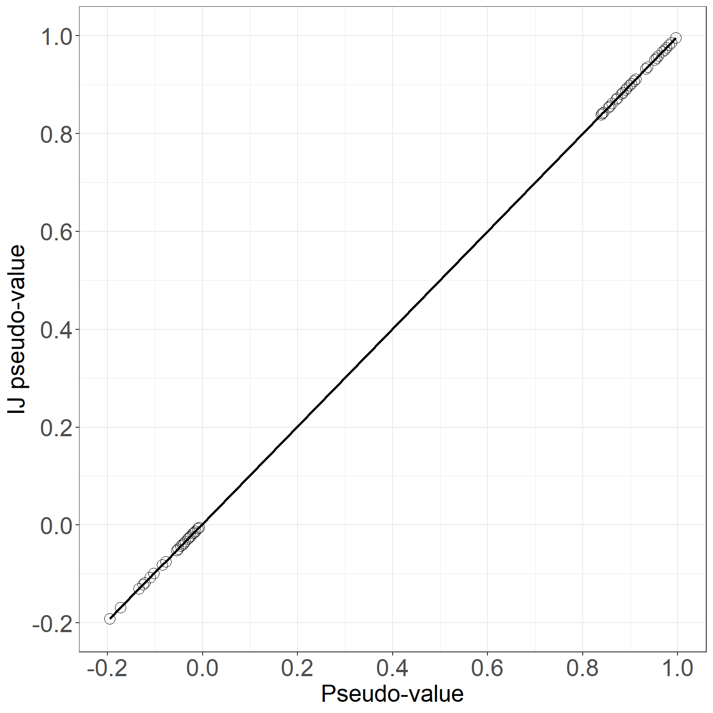
fig6.11right <- ggplot(aes(x = pseudo, y = IJpseudo - pseudo), data = pdata) +
geom_point(size = 4, shape = 1) +
ylab("Difference") +
xlab("Pseudo-value") +
scale_x_continuous(limits = c(-0.2, 1),
breaks = seq(-0.2, 1, by = 0.2)) +
scale_y_continuous(limits = c(-0.01, 0.01),
breaks = seq(-0.01, 0.01, by = 0.005)) +
theme_general
fig6.11right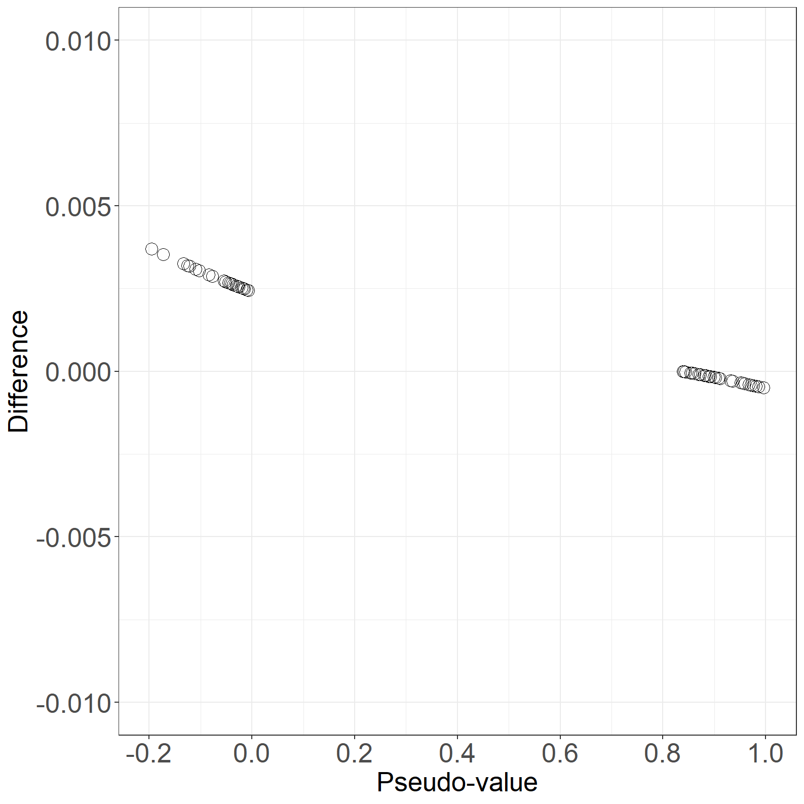